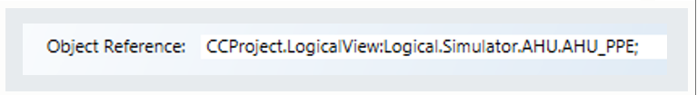
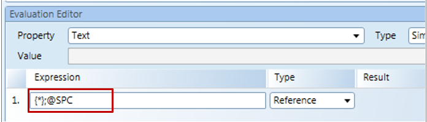
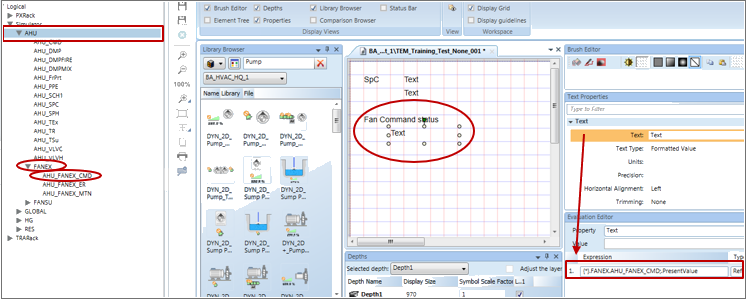
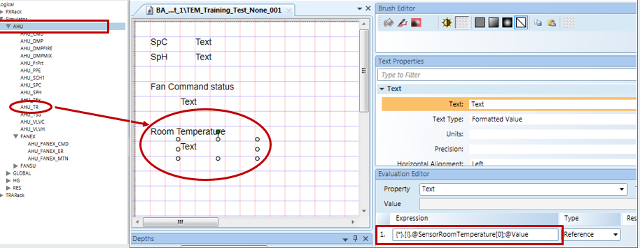
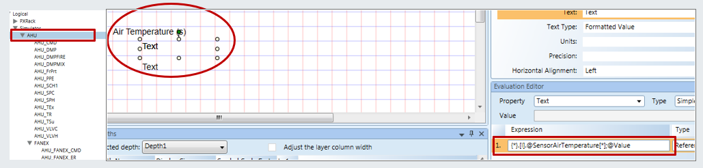

Graphic Templates
A graphic template is a collection of elements and symbols that are used to map to data points so that data point COV values representing pieces of equipment or objects can be displayed during runtime in the Graphics Viewer. The management station provides you with standard graphics for various systems including room automation applications and plant functions. At runtime, object property values are passed to the associated graphics template.
Viewing Graphic Templates
You can view graphic templates in the Library Browser, accessed from either the System Browser or the Graphics Editor.
In System Browser, clicking on a graphic template library folder displays the Graphics Library Browser where you can view and browse all the graphic templates for a particular library in either a thumbnail view or a list view.
If you click a graphic templates folder, the associated graphic templates display in the Default tab (Operating mode) or the Graphics tab (Engineering mode).
The graphic template opens automatically in the primary pane or can be selected in Related Items to open in the Secondary pane.
Mapping Functions to a Graphic Template
Graphic templates are used to map to data points so that you can see the data point COV values representing a piece of equipment or an object.
When a data point's function is associated to a graphic and a graphic template, the graphic template has a higher priority in its display privileges. When the data point is selected, the graphic template, by default, displays in the Primary pane, and not the Graphics tab. You can, however, lower the graphic templates priority by enabling the Low Priority check box in the Graphics Properties.
Graphic Template Characteristics
Graphic templates have the following characteristics:
- They are linked to an object model or function.
- By default, open in the Primary pane when an associated object is selected.
- Visible in the Related Items of the objects to which it is assigned. From there, it can also be opened in the Secondary pane.
Substitutions in Graphic Templates
A template can be configured using only Star {*} substitutions.
Star{*} Substitutions
Graphic templates are most commonly configured using star {*} substitutions, rather than using a keyword or literal (alpha-numeric) name in the substitution.

- In an evaluation expression, the star {*} substitution is extended to also resolve a specific property. For example:
- . Property_name = A period indicates the property is called from the object model
- @Property_name =The “at” sign indicates the property is called from the function

Extended Substitutions
You can extend a star {*} substitution to also access subpoints under a device or application assigned to a function.
- Before the semi-colon ‘;’ terminator, an expression can be extended using additional prefixes, such as nodes, to resolve the properties of child nodes when the graphic template is called higher up in the structure.

Extended Substitutions: Nodes |
For Example: In System Browser, if you click an AHU node the graphic template in the function assigned to AHU displays. The template is configured, in part, with the expression: {*}.FANEX.AHU_FANEX_CMD;.Present_Value The template displays the resolved CMD status of the object, which is the child node of FANEX” |
- Prefixes can be added to an evaluation expression to support property resolution for views in System Browser:
Extended Substitutions: Prefixes for System Browser Views | |
Prefix | Views |
.[l]. | Logical |
.[m]. | Management |
.[p]. | Physical |
.[a]. | Application |
For example: {*}.[l].FANEX.AHU_FANEX_CMD;.Present_Value *These same terms can also be used in symbol substitutions | |
- In an expression a function assigned to an object can be evaluated, and a property in that function will be resolved in the template at runtime.

Extended Substitutions: Functions assigned to Objects [0] |
For example: When the graphic template is called from the AHU node, it should display the property Value from the first data point below AHU that has the function Sensor room temperature assigned to it. {*}.[l].@SensorRoomTemperature[0];@Value Result - The template displays the present value for the AHU_TR node. The [0] resolves a single value according to the index. |
- In an expression a function is evaluated, and for all data points below the parent node having this function assigned to them, a related property will be resolved in the template at runtime.

Extended Substitutions: Replication [*] |
For example: When the template is called from the AHU node, it should display the data for the property ‘Value’ for all data points below AHU that have the function SensorAirTemperature assigned to them. {*}.[l].@SensorAirTemperature[*];@Value Result – the template replicates and displays the present values for the AHU_TR nodes. The [*] resolves any values agreeing with the condition. |
- Similar to generic symbols, an expression can check if a data point and/or a property exists. In the template, the first term in the expression that is true will be resolved at runtime.
Extended Substitutions: Conditional Expressions |
For example: When the template is called from the AHU node, it should display the data for the property ‘Value’ for all data points below AHU that have the function SensorAirTemperature assigned to them. {*};@Property1 ? {*};@Property2 ? Default value (for example, “Not found”) Result – The conditions in the expression are checked one at a time. |
Testing a Graphic Template

The Value Simulator is used to test the correctness of the substitutions as you build the graphic template. Each time a change is made to the template, you can drag the parent data point instance from System Browser to the Object Reference field and click ‘Assign’.
It is also important to note the following:
- The object reference is not stored in the graphic template, it is purely for testing.
- To see the correct COV values a graphic template must be opened indirectly via a data point.
Related Topics
For related procedures, see Configuring Graphic Templates.
For workspace overview, see Graphic Templates Browser.